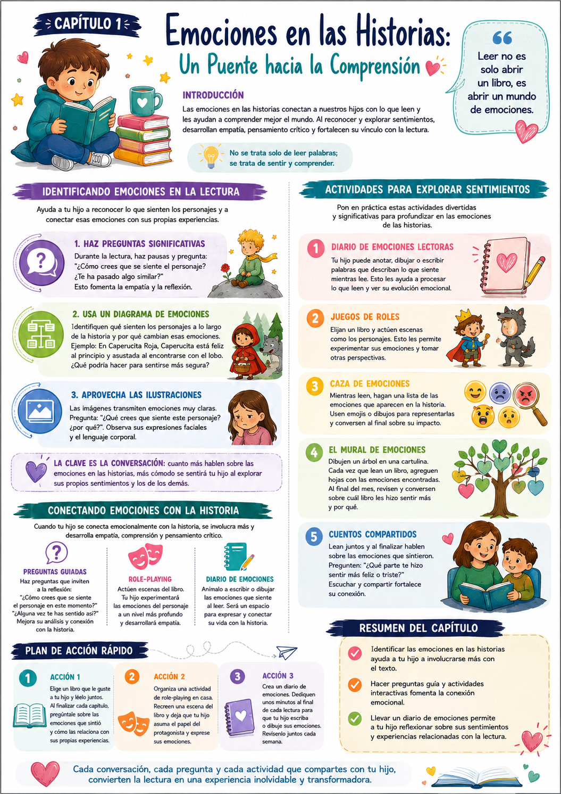

¿Alguna vez notaste cómo tu hijo se desconecta de lo que está leyendo? Muchas veces el problema no es la dificultad del texto — es que no hay una conexión emocional con la historia. Cuando los chicos sienten lo que sienten los personajes, la comprensión se multiplica.
Este capítulo del Bono 2 arranca desde ahí: las emociones como puerta de entrada a la lectura profunda. No se trata solo de descifrar palabras — se trata de sentir y comprender.
Identificar emociones
Aprender a reconocer lo que sienten los personajes — y conectarlo con lo que el chico siente él.
Diagrama de emociones
Mapear los cambios emocionales de los personajes a lo largo de la historia para entender la narrativa.
Diario emocional
Un cuaderno donde el chico registra cómo se sintió leyendo — y ve su evolución con el tiempo.
Por qué las emociones mejoran la comprensión
Cuando el chico conecta emocionalmente con un personaje, está más motivado para seguir leyendo y descubrir el desenlace. Esa motivación es la que transforma la lectura de una tarea en una experiencia que quiere repetir.
✅ Antes de arrancar

Tuki te dice:
Las historias son más que palabras en una página — son vehículos de experiencias humanas. Cuando tu hijo aprende a sentirlas, aprende a comprenderlas.
Para entender por qué trabajar las emociones en la lectura es tan poderoso, hay que entender cómo funciona la conexión entre emoción y comprensión en el cerebro de un chico.
Involucramiento emocional
Cuando el chico siente la ansiedad del personaje, está más motivado para seguir leyendo. La emoción activa la atención de una forma que la lectura neutral no logra.
Empatía como habilidad
Identificar emociones en los personajes entrena la empatía en la vida real. Un chico que aprende a "leer" emociones en los libros aprende a leerlas en las personas.
La conversación como herramienta
Cuanto más hablás sobre las emociones en las historias, más cómodo se siente tu hijo para explorar sus propios sentimientos. La lectura se vuelve un espacio seguro.
Las ilustraciones hablan
Las imágenes transmiten emociones de forma clara — expresiones faciales, colores, lenguaje corporal. Son una puerta de entrada perfecta para chicos que todavía no leen mucho texto.
Ejemplo concreto
Están leyendo "El Principito" y el protagonista se siente solo. Preguntás: "¿Cómo creés que se siente en este momento? ¿Te pasó algo similar alguna vez?" Esa pregunta simple conecta la historia con la vida del chico — y eso es lo que fija la comprensión.
Tuki te dice:
La lectura no es solo un ejercicio académico — es una experiencia emocional. Cuando la tratamos así, los chicos quieren leer más.
Tres estrategias concretas para trabajar las emociones durante y después de la lectura. Se pueden usar con cualquier libro.
Identificar emociones durante la lectura
Pausas estratégicas · Preguntas guiadas · Cualquier libro
No hay que esperar a terminar el libro para hablar de emociones. Las pausas durante la lectura son el momento más poderoso para activar la conexión emocional.
- 1Elegí momentos clave de la historia para pausar — cuando el personaje enfrenta un problema, toma una decisión o siente algo intenso.
- 2Preguntá: "¿Cómo creés que se siente ahora? ¿Por qué?" — dejá que el chico responda sin apurarlo.
- 3Conectá con su experiencia: "¿A vos te pasó algo parecido alguna vez?"
- 4Usá las ilustraciones como apoyo — "mirá su cara, ¿qué emoción ves?"
Diagrama de emociones
Mapeo visual · Post-lectura · Papel y colores
Un diagrama simple que muestra cómo cambian las emociones de los personajes a lo largo de la historia. Hacerlo visual ayuda al chico a entender la narrativa de una forma nueva.
- 1Hacé una tabla simple: personajes en una columna, momentos clave de la historia en las otras.
- 2Juntos, completá qué emoción siente cada personaje en cada momento — con palabras o con emojis.
- 3Preguntá: "¿Por qué cambia la emoción del personaje en este punto? ¿Qué pasó?"
- 4Conectá las emociones con las acciones: "¿Creés que hizo lo que hizo por cómo se sentía?"
Ejemplo
En "Caperucita Roja": Caperucita está feliz al salir, curiosa en el bosque, asustada con el lobo. Mapear eso ayuda al chico a entender que las emociones mueven la historia.
Conectar emociones con la vida real
Puente historia-experiencia · Reflexión · Profundidad
El paso más poderoso es conectar lo que siente el personaje con algo que el chico vivió. Eso transforma la historia en algo personal — y lo personal no se olvida.
- 1Después de identificar una emoción en el personaje, preguntá: "¿Vos alguna vez te sentiste así?"
- 2Si el chico comparte, escuchá sin interrumpir y validá lo que siente: "Tiene sentido que te hayas sentido así".
- 3Preguntá: "¿Qué hizo el personaje con esa emoción? ¿Vos hiciste algo parecido o diferente?"
- 4Compartí vos también — "a mí me pasó algo parecido cuando..." Eso normaliza el proceso y fortalece el vínculo.
Tuki te dice:
No hace falta usar las tres estrategias en cada lectura. Una sola pregunta bien hecha puede abrir una conversación que dure horas.
Cinco actividades concretas para explorar emociones durante y después de la lectura — y el plan de acción para arrancar esta semana.
Diario de emociones lectoras
Hábito semanal · Cuaderno + colores · Evolución visible
Un cuaderno donde el chico registra sus experiencias emocionales con cada libro. Con el tiempo, se convierte en un mapa de su desarrollo emocional y lector.
- 1Elegí un cuaderno especial — que él lo decore con la tapa para que sienta que es suyo.
- 2Después de cada lectura: título del libro, fecha, y tres emociones que sintió — con dibujos, emojis o palabras.
- 3Una vez por semana, revisén juntos el diario. Ver la evolución es muy motivador.
Caza de emociones
Durante la lectura · Lista de emojis · Interactivo
Mientras leen, hacen una lista de emociones que aparecen en la historia. Pueden usar emojis o dibujos para representar cada una — al final, revisan la lista juntos.
- 1Prepará una hoja en blanco antes de empezar a leer.
- 2Cada vez que aparece una emoción en la historia, la anotan — con el nombre del personaje y el emoji correspondiente.
- 3Al terminar el capítulo, revisan: ¿qué emociones aparecieron más? ¿cuál sorprendió más?
Mural de emociones
Proyecto mensual · Cartulina · Visual y acumulativo
Una cartulina en la pared con forma de árbol. Cada libro leído agrega "hojas" con las emociones que generó. Al final del mes, tienen un mapa visual de todo lo que sintieron leyendo.
- 1Dibujá o pegá un árbol grande en cartulina en la pared del cuarto.
- 2Por cada libro, cortá hojas de papel de colores — un color por emoción (rojo=enojo, amarillo=alegría, azul=tristeza).
- 3Al terminar cada libro, peguen las hojas correspondientes con el título del libro escrito.
- 4Al final del mes, revisen el árbol: ¿qué libro generó más emociones? ¿cuál fue el más alegre? ¿cuál el más triste?
Acción 1 — Lectura con pausas emocionales
Elegí un libro y léanlo juntos haciendo pausas estratégicas para preguntar sobre emociones. No hace falta terminar el libro — con un capítulo alcanza para empezar.
Acción 2 — Juego de roles emocional
Elegí una escena del libro donde el personaje siente algo fuerte. Actuenla juntos — que él sea el personaje y exprese la emoción con el cuerpo y la voz.
Acción 3 — Arrancá el diario de emociones
Conseguí un cuaderno esta semana y hacé la primera entrada juntos después de la próxima lectura. No tiene que ser perfecto — con el título, la fecha y un dibujo de cómo se sintió alcanza para empezar.
- 1Forzar la conversación emocional. Si el chico no quiere hablar de cómo se siente, no presiones. Plantá la semilla y dejá que florezca a su ritmo.
- 2Invalidar sus emociones. Si dice que el personaje está "aburrido" cuando vos creés que está triste, no lo corrijas. Explorá su perspectiva — puede ser más interesante que la tuya.
- 3Solo preguntar, nunca compartir. Si vos también compartís cómo te sentiste leyendo, el chico se siente acompañado — no interrogado.
- 4Elegir libros que no conectan. Un libro que no resuena con el chico no va a generar conexión emocional. Que él participe en la elección.
- 5Saltear la reflexión post-lectura. El momento después de terminar es el más rico para la conversación emocional. No lo dejés pasar.
Tuki te dice:
¡Muy bien! Ya tenés todo para que la lectura sea una experiencia emocional real. Mirá el resumen visual y seguimos con el Cap 2.
Esta infografía resume las estrategias para identificar y trabajar emociones en la lectura.

Infografía · Bono 2 Cap 1 — Emociones en las Historias
Tuki te dice:
¡Terminaste el Cap 1 del Bono 2! En el Cap 2 vemos cómo usar la lectura para desarrollar la empatía — una de las habilidades más importantes que podés regalarle a tu hijo.